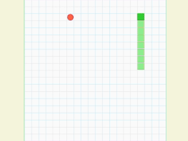
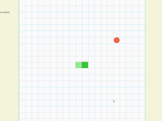

This project demonstrates the power of reinforcement learning by training AI agents to master the classic Snake game. Watch how trained agents exhibit intelligent navigation patterns compared to random exploration:

Intelligent Decision Making
Trained agents efficiently navigate towards food while avoiding obstacles, demonstrating learned strategic behavior and spatial awareness.

Random Exploration
Untrained agents move randomly without strategy, frequently colliding with walls or their own body, highlighting the learning achievement.